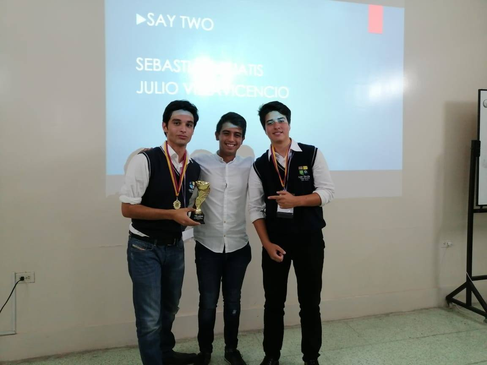
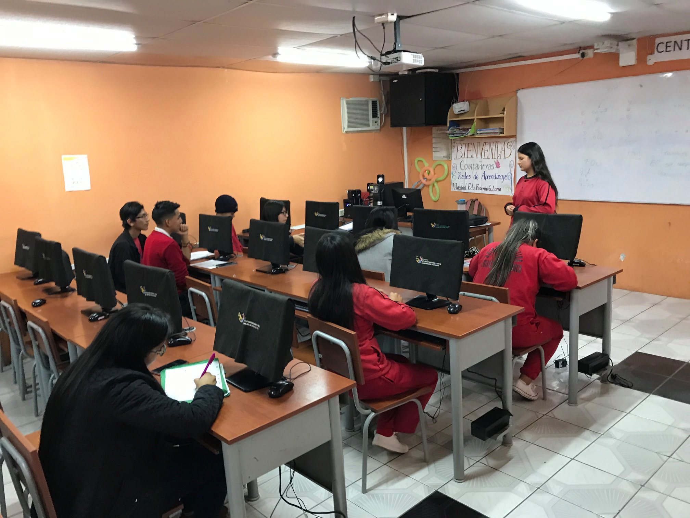
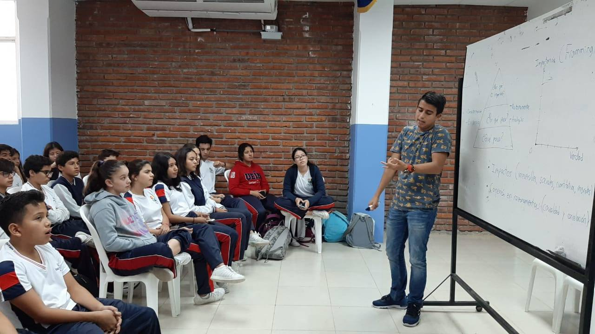

¿A quiénes contratamos?
Trabajamos con los mejores debatientes del circuito universitario a nivel nacional. Los aspirantes deben atravezar un proceso de selección. Quienes culminen exitosamente tendrán un período de capacitación donde aprenderán técnicas de manejo de aula, el uso eficiente de los recursos que entregamos para la enseñanza de debate y a tratar con menores de edad durante el proceso de capacitación. Los mentores reciben un pago por hora trabajada y sus costos de trasporte son cubiertos por DILO.
¿Por qué trabajar con nosotros?
DILO te brinda la oportunidad de cambiar las vidas de estudiantes de zonas históricamente olvidadas, y al mismo tiempo eliminar las brechas socieconómicas, construyendo un ciruito de debate inclusivo, donde todos los estudiantes, sin importar de qué colegio vengan, conviven y comparten entre sí. La difusión de una enseñanza que promueva el pensamiento crítico es fundamental para construir una mejor sociedad, una ciudadanía más participativa y más empoderada de su presente y futuro.
  